| name | input | export_new_L1 | export_new_L1_5 | export_new_2_L1_1 | export_new_2_L1_2 | export_new_1_L1_1 | export_new_1_L1_4 |
|---|
| .ipynb_checkpoints |  |  |  |  |  |  |  |
| 1.png | | 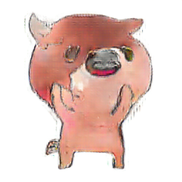 | 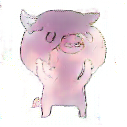 | | | | 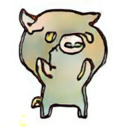 |
| 10.png | | 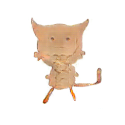 | 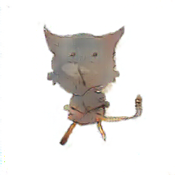 | 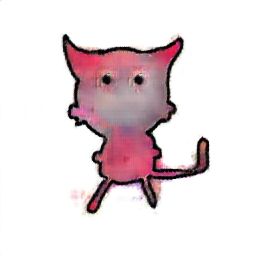 | 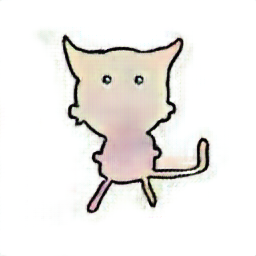 | 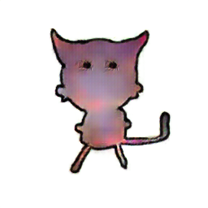 | 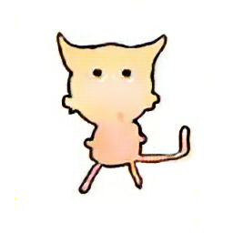 |
| 11.png | 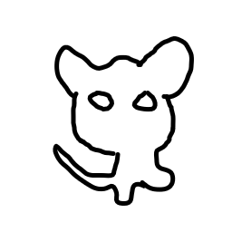 | 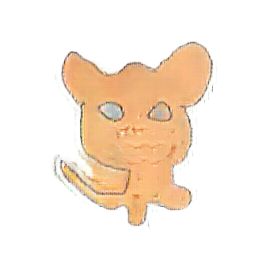 | 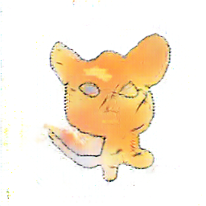 | 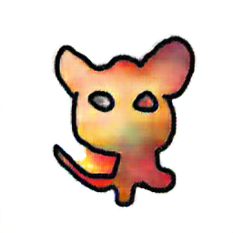 | 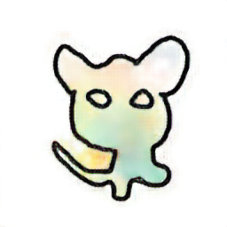 | | 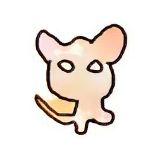 |
| 12.png | | | |  | | | |
| 13.png | 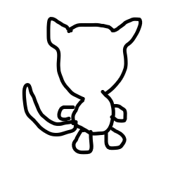 | 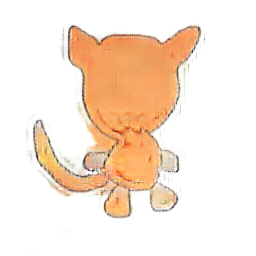 | 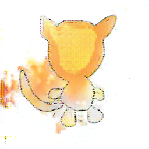 | 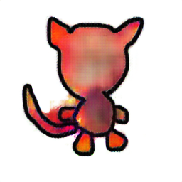 | 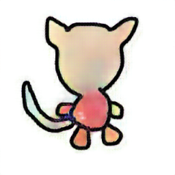 | 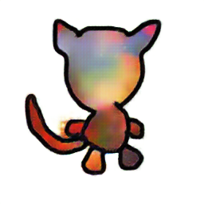 | 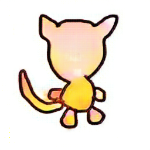 |
| 14.png | 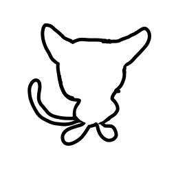 | 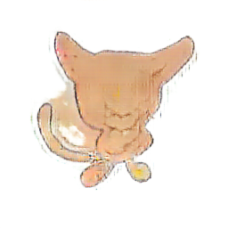 | 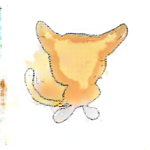 | 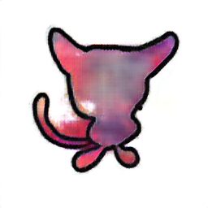 |  | 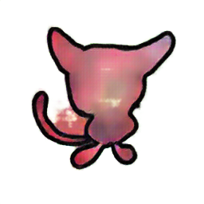 | 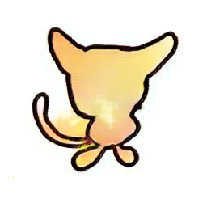 |
| 15.png | 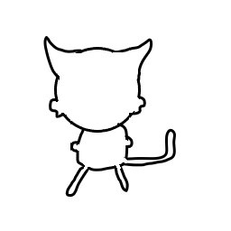 | 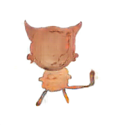 | 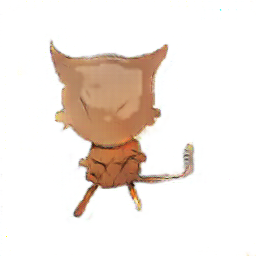 | |  | | |
| 16.png | | 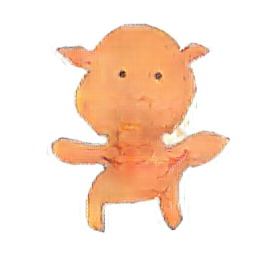 | 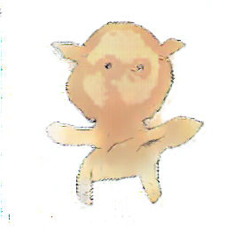 | 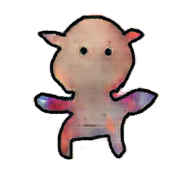 | | | 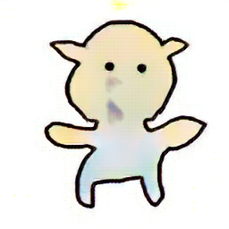 |
| 17.png | 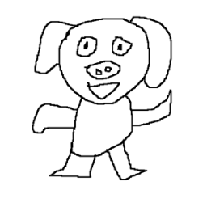 | | | | | | |
| 18.png | 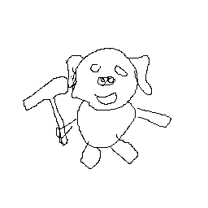 | 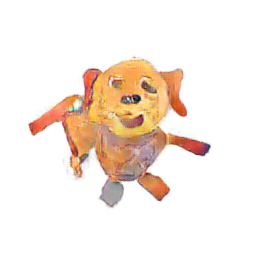 | 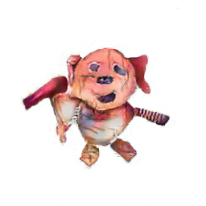 | 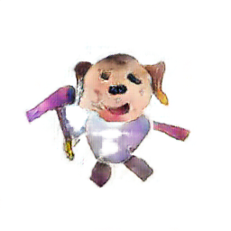 | 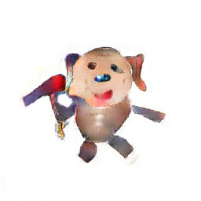 | 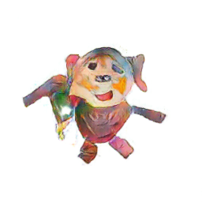 | 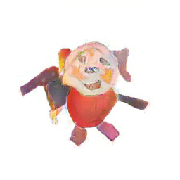 |
| 19.png | 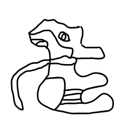 | 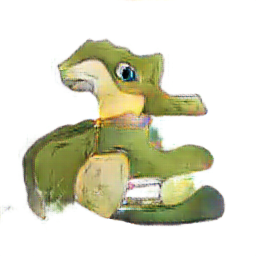 | 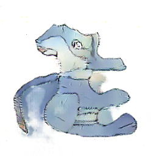 | 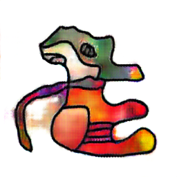 |  | 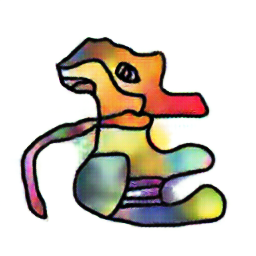 | 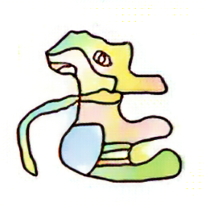 |
| 2.png | | | | | | | |
| 20.png | |  | 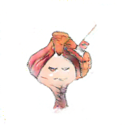 | | | | |
| 21.png | | | | | | | |
| 22.png | | | | | | | |
| 23.png | | | | | | | |
| 24.png | | | |  | | | |
| 25.png | | | | | |  | |
| 26.png | | | | | | | |
| 27.png | | | | | | | |
| 28.png | | | | | | | |
| 29.png | | | | | | | |
| 3.png | | | | | | | |
| 30.png |  | |  | | | | |
| 31.png | | | | | | | |
| 32.png | | | | |  | | |
| 33.png | | | | | | | |
| 34.png | | |  | | | | |
| 35.png | | | | | | | |
| 36.png | | | | | | | |
| 37.png | | | | | | | |
| 38.png | | | | | | | |
| 39.png | | | | | | | |
| 4.png | | | | | | |  |
| 40.png | | | | | | | |
| 41.png | |  | | | | |  |
| 42.png | | | |  |  |  |  |
| 43.png | | | |  | |  |  |
| 44.png | | | |  | |  | |
| 45.png | | | |  | |  | |
| 46.png | | | |  | |  | |
| 47.png | | | |  | |  | |
| 48.png | | |  |  | |  | |
| 49.png | | | |  | |  |  |
| 5.png | | | | | | | |
| 50.png | | | |  | |  | |
| 51.png | | | |  | |  | |
| 52.png | | | |  | |  | |
| 53.png | | | |  | |  | |
| 54.png | | | |  |  |  | |
| 55.png | | | |  | |  | |
| 56.png | | | |  | |  | |
| 57.png | | | |  | |  | |
| 58.png | |  |  |  | |  | |
| 6.png | | | | | | | |
| 7.png | | | | | | | |
| 8.png | | | | | | | |
| 9.png | | | | | | | |